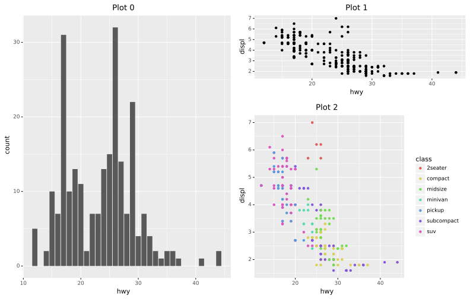

cowpatch


A package for combining/aranging multiple python ggplot visuals from plotnine, with allowances to also combined figures from matplotlib and seaborn. Internally, we leverage SVG objects and descriptions to accomplish it’s goals.
Installation
Currently this project is under development and is not on pypi. As such, to install this package please do the following:
clone repository to your local computer (this assumes you have
gitinstalled):$ git clone https://github.com/benjaminleroy/cowpatch.git
install
poetryif you don’t have it already$ pip install poetry
then install the package (you need to be in the
cowpatchroot folder)$ poetry install
Usage
import cowpatch as cow
import plotnine as p9
import plotnine.data as p9_data
import numpy as np
# creation of some some ggplot objects
g0 = p9.ggplot(p9_data.mpg) +\
p9.geom_bar(p9.aes(x="hwy")) +\
p9.labs(title = 'Plot 0')
g1 = p9.ggplot(p9_data.mpg) +\
p9.geom_point(p9.aes(x="hwy", y = "displ")) +\
p9.labs(title = 'Plot 1')
g2 = p9.ggplot(p9_data.mpg) +\
p9.geom_point(p9.aes(x="hwy", y = "displ", color="class")) +\
p9.labs(title = 'Plot 2')
vis_patch = cow.patch(g0,g1,g2)
vis_patch += cow.layout(design = np.array([[0,1],
[0,2]]),
rel_heights = [1,2])
vis_patch.show(width = 11, height = 7)

Please see additional documentation pages like “Getting-Started” and the individual pages on different plot arrangement strategies.
Package Logistics
Background and history
This package’s name is a merging of the names of R packages’ cowplot and patchwork. It attempts to provide similar plot arrangement and combination tools as gridExtra, cowplot and patchwork for the plotnine’s ggplot objects.
This package is not directly related to any of a-fore-mentioned plots but naturally stands on the shoulders of the contributions each of the packages made.
The approach of this package to leverage a SVG backend may make the actually the actual package a bit more “hacky” then some may like, but we hope it can still be of use to the community and should naturally avoid certain drawbacks in individual package development.
Contributing
Interested in contributing? Check out the contributing guidelines. Please note that this project is released with a Code of Conduct. By contributing to this project, you agree to abide by its terms.
License
cowpatch was created by Benjamin LeRoy (benjaminleroy) and Mallory Wang (wangmallory). It is licensed under the terms of the MIT license.
Credits
cowpatch was created with cookiecutter and the py-pkgs-cookiecutter template, the documentation leverages sphinx, and underlying testing leverages pytest, hypothesis and pytest-regression. See the full list of package dependencies on Github.